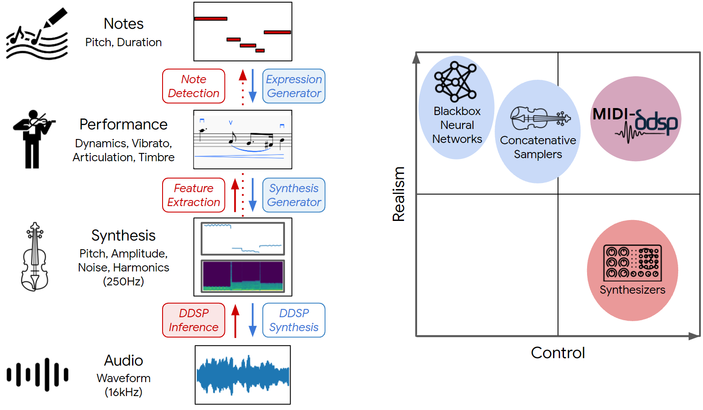
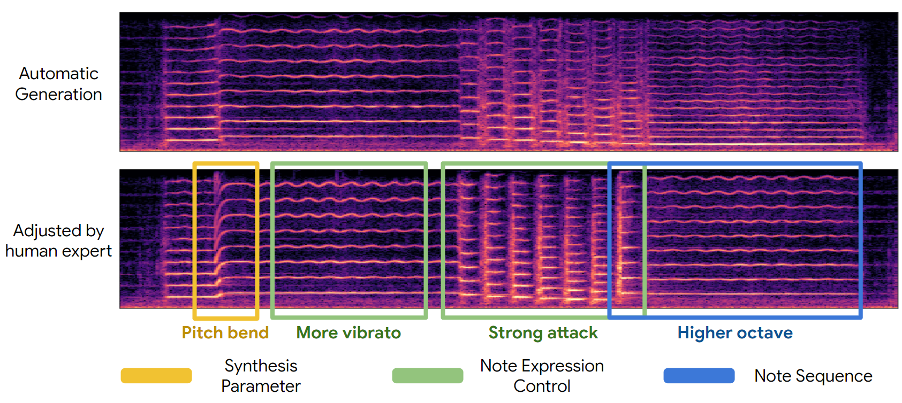
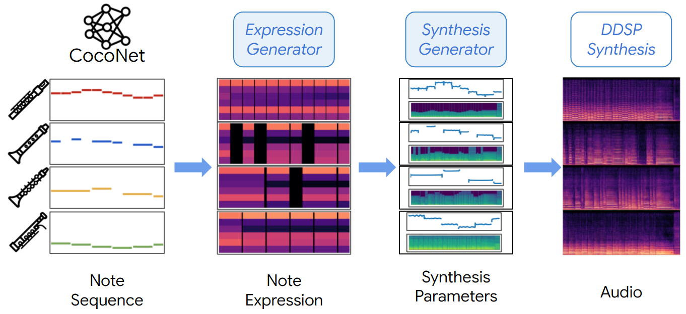
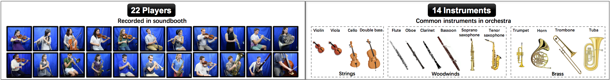
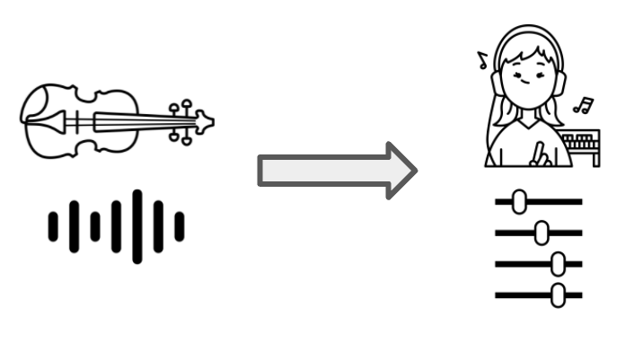
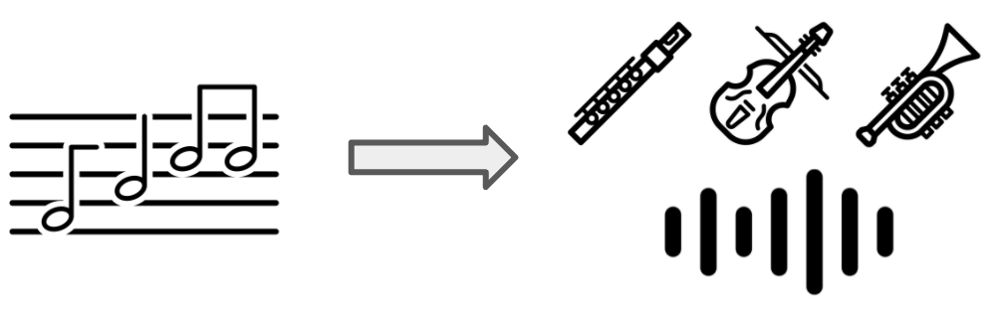
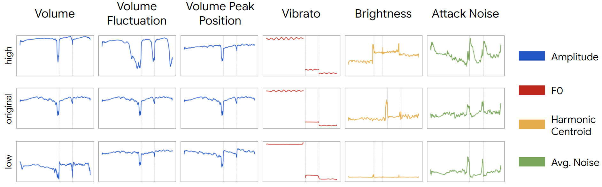
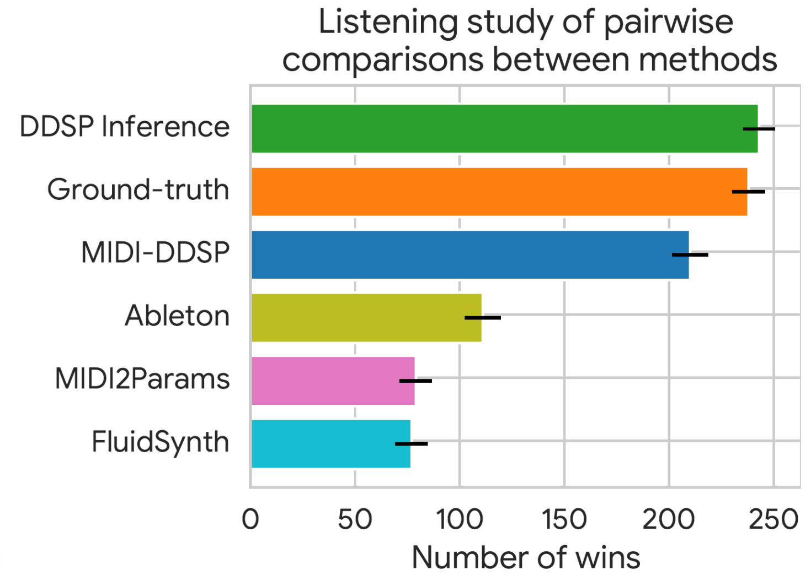
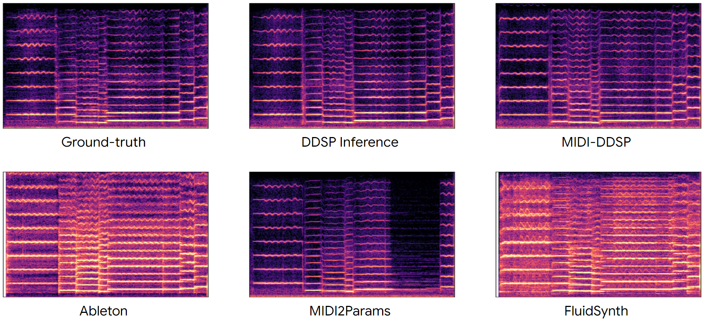

MIDI-DDSP: Detailed Control of Musical Performance via Hierarchical Modeling
Main Paper
https://openreview.net/pdf?id=UseMOjWENvWe will make our code, including the reproduction of human adjustments in samples available in the near future.
Contents
Overview
Fine Grained Control (Figure 2)
Full End-to-End Generation (Figure 6)
Dataset
Performance Synthesis & Adjustment
MIDI Synthesis
Bach Quartet Synthesis
Note Expression Control (Figure 4, 8, 9, and more)
Listening Test (Figure 5, 7)
Improvement of GAN (Figure 12)
Pitch Variants in Synthesis
Overview
In this work, we introduce MIDI-DDSP, a hierarchical model of musical instruments that enables both realistic neural audio synthesis and detailed user control. We infer explicit interpretable features for note, performance, and synthesis level, and we build models at each level to generate audio in a hierarchy. Here, we present the audio example results for MIDI-DDSP. For details about the system and architecture, please refer to the paper linked above.
Fine Grained Control
The given performance on violin (top) is manipulated at all three levels (notes, expression, synthesis parameters) to create a new realistic yet personalized performance (bottom). An initial generation is automatically generated from the full MIDI-DDSP model (top), and an expert musician adjusted notes (blue), performance attributes (green), and low-level synthesis parameters (yellow) to craft a personalized expression of a musical piece (bottom).
| Automatic Generation | Adjusted by Human Expert |
|---|---|
Full End-to-End Generation
MIDI-DDSP can take note input from a score level Bach composition model CocoNet and automatically synthesizing a Bach quartet by generating explicit latent for each level in the hierarchy.

CocoNet re-harmonization of Ode to Joy in woodwinds set.
| Mix |
|---|
| Soprano - Flute | Alto - Oboe | Tenor - Clarinet | Bass - Bassoon |
|---|---|---|---|
Thanks to wide range of instrument recordings provided by the URMP dataset, we can also render CocoNet
re-harmonization of Ode to Joy in string set.
| Mix |
|---|
| Soprano - Violin | Alto - Violin | Tenor - Viola | Bass - Double Bass |
|---|---|---|---|
Dataset
To demonstrate modeling a variety of instruments, we use the URMP dataset, a publicly-available audio dataset containing monophonic solo performances of a variety of instruments. Here we present a selection of the training data we used. Also, the recordings in the URMP dataset are played by students, and the performance quality is substantially lower compared to virtuoso datasets (MAESTRO) used in other work. Typically, some recordings have bad intonation accuracy, which makes MIDI-DDSP also having intonation accuracy problems in synthesis. Here we also present some playings of the training data that are out of tune.
Training Set:
Training set playing out of tune:
Performance Synthesis & Adjustment
MIDI-DDSP enables detailed control, especially performance level control. Here we present given a violin MIDI score, how a human expert violin performer will adjust the automatic generation to makes it to the way an expert will perform.
Viva La Vida:
| Automatic Generation | After Adjustment |
|---|---|
Phantom:
| Automatic Generation | After Adjustment |
|---|---|
Automatic MIDI Synthesis
Here we present the automatic score-to-audio synthesis of MIDI-DDSP on generic MIDI input. Learned to perform from data, MIDI-DDSP can generate idiomatic details of human performance. For example, in some syntheses, breathing sounds between notes are generated.
| Game of Thrones - Cello | La Vie En Rose - Trumpet | Viva La Vida - Violin |
|---|---|---|
| Beauty and the Beast - Flute | Cannon in D - Cello | Phantom - Violin |
|---|---|---|
Bach Quartet Synthesis
Here we present MIDI-DDSP automatic Bach quartet synthesis by taking note input from Bach Chorales. Here, we present three types of instrument ensemble: string set, brasswind set and woodwind set. The volume of four parts are mixed with different gains: String set: S +2dB, A +2dB, T -1dB, and B -1dB, Woodwind set: S +2dB, A +2dB, T +5.6dB, and B 2.9dB, Brasswind set: S +1.5dB, A +1.2dB, T 0dB, and B 1.8dB,
BWV 227.1 - String Set
| Ensemble |
|---|
| Soprano - Violin | Alto - Violin | Tenor - Cello | Bass - Double Bass |
|---|---|---|---|
BWV 227.1 - Brasswind Set
| Ensemble |
|---|
| Soprano - Trumpet | Alto - French Horn | Tenor - Trombone | Bass - Tuba |
|---|---|---|---|
BWV 227.1 - Woodwind Set
| Ensemble |
|---|
| Soprano - Flute | Alto - Oboe | Tenor - Clarinet | Bass - Bassoon |
|---|---|---|---|
More Bach Quartet
| BWV165.6 - String Set | BWV178.7 - String Set | BWV180.7 - String Set | BWV245.14 - String Set |
|---|---|---|---|
Note Expression Control
In MIDI-DDSP, manipulating note-level expression can effectively change the synthesis-level quantities. We show by taking a test-set sample (middle row) and adjusting each expression control value to lowest (bottom row) and highest (upper row), how each synthesis quantities (rightmost legend) would change. The dashed gray line in each plot indicates the note boundary.
| Original Sample |
|---|
| Volume - Low | Volume - High | Vol. Fluc. - Low | Vol. Fluc. - High |
|---|---|---|---|
| Vol. Peak Pos. - Low | Vol. Peak Pos. - High | Vibrato - Low | Vibrato - High |
|---|---|---|---|
| Brightness - Low | Brightness - High | Attack Noise - Low | Attack Noise - High |
|---|---|---|---|
More details about note expression controls including Figure 8, 9 and more can be found here.
Listening Test
The listening test results on Test-set MIDI Synthesis. All the audio samples below are generated with only MIDI from test-set as input. MIDI-DDSP synthesizes more realistic audio than a prior work MIDI2Params, and two concatenative samplers.
 | Ground-truth | DDSP Inference | MIDI-DDSP |
|---|---|---|
| Ableton | MIDI2Params | FluidSynth |
|---|---|---|
For access to all the samples used in listening test, please check: https://midi-ddsp.github.io/violin_listening_test.zip
For test-set generation of all other instruments, please check: https://midi-ddsp.github.io/violin_listening_test.zip
Improvement of GAN
Please check here improvement of GAN in synthesis quality.
Pitch Variants in Synthesis
Due to intonation problem in some recordings in the dataset, MIDI-DDSP will also suffer from inaccurate intonation in synthesized audio. Also because the pitch generation in MIDI-DDSP is an auto-regressive sampling process, each time the pitch can be different and MIDI-DDSP would accurately recreate the intonation problems in the dataset. Here we present some samples that has varying pitch accuracy. We plan to address this problem in the future works.
| CocoNet Generation | La Vie En Rose | Phantom |
|---|---|---|
Open Source Image Attribution
The icons used throughout the paper and webpages are used under the Creative Commons license via the Noun
Project. We
gratefully acknowledge the following creators of these images:
Equalizer by fahmionline from the Noun Project
composer by Magicon from the Noun Project
Music Note by Randomhero from the Noun Project
composer by Amethyst Studio from the Noun Project
Violine by Symbolon from the Noun Project
Trumpet by Symbolon from the Noun Project
Audio by cataicon from the Noun Project.
bassoon by Symbolon from the Noun Project.
Clarinet by Symbolon from the Noun Project.
composer by Pham Duy Phuong Hung from the Noun Project.
Flute by Symbolon from the Noun Project.
Neural Network by Ian Rahmadi Kurniawan from the Noun Project.
oboe by Symbolon from the Noun Project.
Synthesizer by Jino from the Noun Project.
Violin by Olena Panasovska from the Noun Project.
Violinist by Luis Prado from the Noun Project.